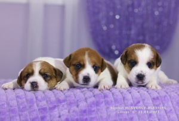
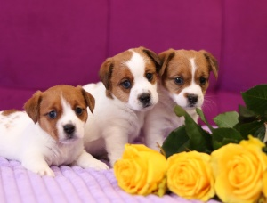
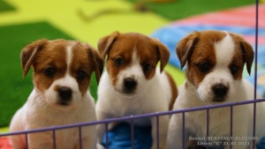
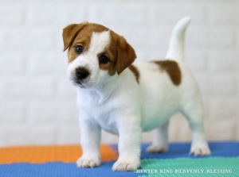
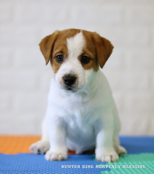
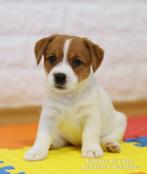
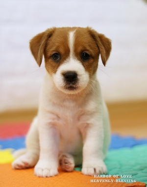
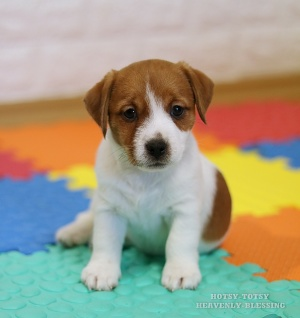
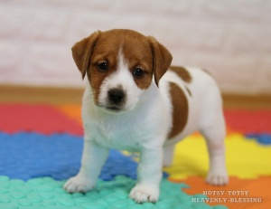

Щенкам 3 недели
Щенкам 3
недели

Щенкам 5 недель
Щенкам 5
недель

Щенкам 6 недель
Щенкам 6
недель

Мальчик HUNTER KING HEAVENLY-BLESSING (ЗАРЕЗЕРВИРОВАН)
Мальчик HUNTER KING HEAVENLY-BLESSING (ЗАРЕЗЕРВИРОВАН)

Мальчик HUNTER KING HEAVENLY-BLESSING (ЗАРЕЗЕРВИРОВАН)
Мальчик HUNTER KING HEAVENLY-BLESSING (ЗАРЕЗЕРВИРОВАН)

Девочка 1 HARBOR OF LOVE HEAVENLY-BLESSING (ОСТАЕТСЯ В
ПИТОМНИКЕ)
Девочка 1 HARBOR OF LOVE HEAVENLY-BLESSING (ОСТАЕТСЯ В
ПИТОМНИКЕ)

Девочка 1 HARBOR OF LOVE HEAVENLY-BLESSING (ОСТАЕТСЯ В
ПИТОМНИКЕ)
Девочка 1 HARBOR OF LOVE HEAVENLY-BLESSING (ОСТАЕТСЯ В
ПИТОМНИКЕ)

Девочка 2 HOTSY-TOTSY HEAVENLY-BLESSING
(ЗАРЕЗЕРВИРОВАНА)
Девочка 2 HOTSY-TOTSY HEAVENLY-BLESSING
(ЗАРЕЗЕРВИРОВАНА)

Девочка 2 HOTSY-TOTSY HEAVENLY-BLESSING
(ЗАРЕЗЕРВИРОВАНА)
Девочка 2 HOTSY-TOTSY HEAVENLY-BLESSING
(ЗАРЕЗЕРВИРОВАНА)
ЩЕНКИ ДЖЕК РАССЕЛ ТЕРЬЕРА Дата
рождения: 31 января 2021 года
ПОМЕТ
"H" (англ.)
31 января 2021 г. родились
щенки джек рассел терьера от пары прекрасных производителей ALI AMURNYI
VOVKULAKA CANDY COVER GIRL
HEAVENLY-BLESSING
По вопросам приобретения
обращаться: +380675029217 Екатерина (вайбер, телеграм, мессенджер), +380939294375 Алеся (вайбер, телеграм,
мессенджер).
ФОТОАЛЬБОМ
ЩЕНКОВ
Родословная щенков
построена на лучших кровях мира. В родословной щенков ЧЕМПИОНЫ МИРА И ЕВРОПЫ, десятки Мульти и
Интер Чемпионов, Лучшие производители и Лучшие представители породы:
Мультичемпион GOLDSAND'S COLUMBUS
Легендарный многократный победитель Чемпионатов и выставок Мультичемпион,
Интерчемпион KANIX SPEED WAGON
Обладатель более 50 CACIB, Чемпион Мира, Мультичемпион,
Интерчемпион ALGRAFS ARCHI
ROYAL .
BEST MALE on CRUFT`S-2019, R.WOLRD
WINNER-2016, EUROPEAN JUNIOR WINNER-2015 (BOB), Интерчемпион JACKANDFISH AND GEK
RAZ
WOLRD WINNER-2016, VICE JUNIOR WORLD
WINNER-2013, CH EURASIA`14, Интерчемпион LOVELY-ORANGE X-CHECK AND
MATE
Мультичемпионы, Интерчемпионы и многократные
победители выставок: HUOLETON
CAPRICORNUS WUKARI-WA
THIDALIUM и другие...
РОДИТЕЛИ ЩЕНКОВ
ALI AMURNYI
VOVKULAKA CANDY COVER GIRL
HEAVENLY-BLESSING
JUNIOR GRAND CHAMPION OF UKRAINE, JUNIOR CHAMPION OF UKRAINE,
CHAMPION OF UKRAINE
Super Grand Champion of Ukraine, B.B.B.-Best of the Best of
Breed in Ukraine, JUNIOR GRAND CHAMPION OF UKRAINE, JUNIOR GRAND CHAMPION OF MOLDOVA, GRAND
CHAMPION OF UKRAINE, CHAMPION OF BULGARIA, BENELUX JUNIOR WINNER-2018 (n the framework of
WDS-2018), Breed Championship Winner-2018, CAC (winner open class) on EURO
DOG SHOW-2019
ДАТА
РОЖДЕНИЯ: 08.09.2016
ТИП ШЕРСТИ: Жесткошерстный
РОСТ: 27 см
Полнозубый
ДАТА РОЖДЕНИЯ: 11.05.2017
ТИП ШЕРСТИ: Брокен
РОСТ: 28,5 см
Полнозубая
TESTS:
Clean by parental tests
Чист по тестам родителей
TESTS:
PLL - genotype N / N (clear)
LOA - genotype N / N (clear)
SCA - genotype N / N (clear)
JBD - genotype N / N (clear)
DM - genotype N / N (clear)
Patella Luxation - 0/0
РОДОСЛОВНАЯ ЩЕНКОВ
White &
Tan 4xBest baby, BIS baby - 1,
BIS White & Tan BISBaby-2, BISPuppy-3,
BIG White & Tan WORLD CHAMPION, BOB WDS 2018, White & Tan Danish Kennel Club Winner 2008
White & Tan InterChampion MultiChampion, Grand Champion of Russia,
Grand
White & Tan Junior Champion of Russia, Champion of Russia, Champion of RKF, Junior Club
Winner White & Tan NO
UCH
White &
Tan
White &
Tan JCHUA, CHUA, 3*JCAC, 2*Best Junior, 4*CAC, 2*CACIB, 2*BOS,
1*ВОВ White & Tan Multi BIG & BIS winner; Junior White &
Tan Reserve Junior World Winner 20
White & Tan MULTI CH
White & Tan JCHUA, JGCHUA, 3*СНUA, BBB, SUPER GRAND
CHUA White & Tan
Tricolour LT-EST JCH,
LT-LV-EST-BALT-BY
White &
Tan JUNIOR GRAND CHAMPION OF UKRAINE, JUNIOR GRAND CHAMPION OF
MOLDOVA, GRAND CHAMPION OF UKRAINE, 3xCHAMPION OF UKRAINE, CHAMPION OF BULGARIA, BENELUX JUNIOR
WINNER-2018 (on the framework of WDS-2018), Breed Championship Winner-2018, CAC
(open White &
Tan INTERCHAMPION, B.B.B. - BEST OF THE BEST OF BREED IN
UKRAINE, JUNIOR CHAMPION OF UKRAINE, White & Tan CRUFTS WINNER '19, CIB, EUROPEAN JUN WINNER '15 & BOB,
Ch It, Ch Rus, Ch No, Ch Slo, Ch RSM, Italian TOP JRT '15'16, vice WORLD WINNER '16'18,
Italian White & Tan CIB, Crufts Vet Winner '19, European Vet Winner '19, Ch
It,
White &
Tan
White &
Tan WOLRD WINNER-2016, VICE JUNIOR White &
Tan C.I.B. Junior world winner 201
White &
Tan
White &
Tan Юный Чемпион Украины (дважды), Junior Champion of Russia, Junior Champion of Latvija,
Junior Champion of Estonia, Junior White & Tan American Grand Champion, Inter
White &
Tan MULTI CH, BEST JRT IN FINLAND
White & Tan Интерчемпион, Юный Чемпион Украины, Чемпион Украины, Чемпион White & Tan Юный
Чемпион Украины
White & Tan
01 апр 2021 . 26 янв
2021